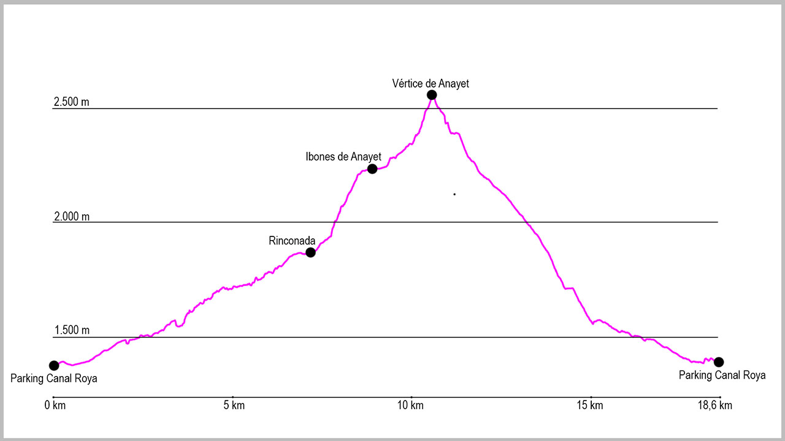

Nuestro punto de partida será el parking de la Canal Roya. Desde este lugar tomaremos la pista que se adentra en el valle. A unos 500 metros veremos 2 cruces, uno a cada lado, que obviaremos. Seguiremos la pista durante 2 kilómetros para adentrarnos en el valle, y encontraremos un cartel que marca la salida de la pista para coger un camino a nuestra derecha. En este punto descenderemos ligeramente para cruzar por un puente el río y seguir la GR11 durante varios kilómetros, obviando en todo momento los cruces que encontraremos a nuestra derecha.
Poco a poco iremos entrando en el valle hasta llegar a la zona de rinconada. Allí nos encontraremos con una “pared” que deberemos ascender. Aunque desde lejos parece complicada, una vez allí, una cómoda subida siguiendo todavía las marcas de GR, nos hará llegar hasta los Ibones de Anayet.
Una vez estemos en el borde del ibón principal, sale un camino bien marcado a nuestra derecha que se dirige hacia el collado de Anayet. Lo cogeremos y subiremos cómodamente hasta el mismo, aunque en los últimos metros tendremos que echar un poco las manos para remontarlo. Aquí giraremos a la izquierda para afrontar, también por camino, la última parte de nuestra subida al Vértice de Anayet.
Desde el pico comenzará nuestra bajada. En muchos tramos no dispondremos de un claro sendero, pero la orientación en esta bajada es fácil. La primera parte será por la cresta que continúa de la subida en dirección suroeste. Tendremos que tener cuidado ya que alguna zona tiene alguna piedra que resbala. Llegaremos por la misma hasta un collado muy marcado en el que giraremos a nuestra derecha para afrontar la bajada hasta una gran campa de hierba plana. Una vez llegados a ella, buscarnos la salida natural del agua a nuestra izquierda y encontraremos un camino que seguiremos durante un buen tramo (importante no hacer caso en este tramo a la señalización de PR, blanca y amarilla, que encontraremos). Este sendero nos acompañara gran parte de la bajada.
Cuando estemos ya por la cota de los 2000 metros pasaremos entre unas rocas muy grandes, para poco después girar casi 180 grados a nuestra derecha y continuar el descenso. Aunque no es una traza clara, la gran cantidad de hitos nos conducirán cómodamente hasta abajo.
Una vez llegados de nuevo a la GR11, por donde hemos pasado en la ida, giraremos a nuestra izquierda para continuar por el valle, esta vez de forma descendente. Volveremos a obviar el camino que sale en esta ocasión a la izquierda y volveremos a cruzar el puente sobre el río para salir de nuevo a la pista que nos conducirá hasta el aparcamiento de inicio.
